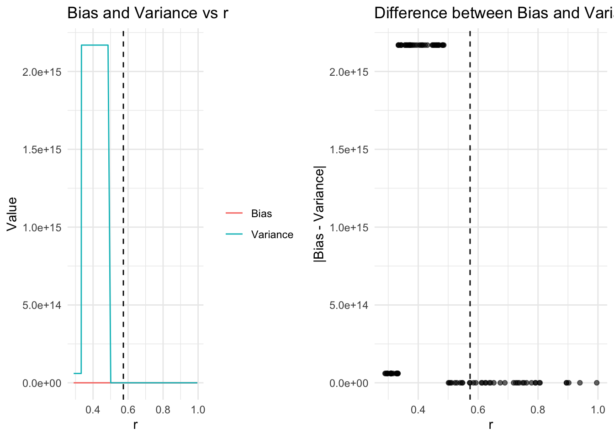

Compact Support: \(supp(\mathbb{P}^{(1)})\) is compact in \(\mathbb{R}^{d}\)
Bounded Density Ratio: \(||f||_{\infty} \leq B < \infty\)
\(\beta\)-Hölder class: \(|w(x) - w(x')| \leq L||x - x'||_{2}^{\beta}\) with \(\beta \in (0, 1]\)
simulate_data <- function(n1 = 1000, # number of target samples
n0 = 1000, # number of source samples
d = 2, # dimension
seed = 123) {
set.seed(seed)
# --- Generate Source Data (Mixture of Gaussians) ---
p_source <- 0.5 # mixture proportion (50% from component 1, 50% from component 2)
# Means for the two components in the source mixture
mu_source1 <- rep(0, d)
mu_source2 <- rep(3, d) # shift second component to separate it somewhat
# Covariance matrices for the two source components (identity for simplicity)
Sigma_source1 <- diag(d)
Sigma_source2 <- diag(d)
# Allocate memory
source_data <- matrix(NA, nrow = n1, ncol = d)
# Decide which component each observation belongs to
z_source <- rbinom(n1, size = 1, prob = p_source)
for (i in seq_len(n1)) {
if (z_source[i] == 1) {
source_data[i, ] <- mvrnorm(n = 1, mu = mu_source1, Sigma = Sigma_source1)
} else {
source_data[i, ] <- mvrnorm(n = 1, mu = mu_source2, Sigma = Sigma_source2)
}
}
# --- Generate Target Data (Another Mixture of Gaussians) ---
p_target <- 0.7 # mixture proportion for target data
mu_target1 <- rep(1, d) # slightly different mean
mu_target2 <- rep(-2, d) # negative shift
Sigma_target1 <- diag(d) * 0.5 # smaller covariance
Sigma_target2 <- diag(d) * 2 # larger covariance
# Allocate memory
target_data <- matrix(NA, nrow = n0, ncol = d)
# Mixture indicator for target distribution
z_target <- rbinom(n0, size = 1, prob = p_target)
for (i in seq_len(n0)) {
if (z_target[i] == 1) {
target_data[i, ] <- mvrnorm(n = 1, mu = mu_target1, Sigma = Sigma_target1)
} else {
target_data[i, ] <- mvrnorm(n = 1, mu = mu_target2, Sigma = Sigma_target2)
}
}
# Return both datasets
list(
source = source_data,
target = target_data
)
}
# Example Usage
target_sample_n = 800
source_sample_n = 1000
dimension = 2
sim_data <- simulate_data(n1 = source_sample_n, n0 = target_sample_n, d = dimension, seed = 123)
source_data <- sim_data$source
target_data <- sim_data$targetWe generate multi-Gaussian distribution to simulate non-parametric data. Dimension of data \(d\) is 2; sample size of target data \(n_0\) is 800; and sample size of source data \(n_1\) is 1000.
# Visualize high dimensional datatarget_sample_n = 800
source_sample_n = 1000
min_sample = min(target_sample_n, source_sample_n)
# Choose parameters
r = 0.5731 # we may use monte-carlo simulation
alpha = log(target_sample_n) / target_sample_n
compute_histogram_ratio <- function(x, target_data, source_data, r) {
# x is a numeric vector of length d
# target_data: n0 x d
# source_data: n1 x d
# r: numeric radius
n0 <- nrow(target_data)
n1 <- nrow(source_data)
# Indicator sum for target_data
# 1/ if distance <= r, 0/ otherwise
# We'll compute Euclidean distance from x to each row in target_data
dist_target <- apply(target_data, 1, function(xi) sqrt(sum((xi - x)^2)))
indicators_target <- (dist_target <= r)
numerator <- mean(indicators_target) # (1/n0) sum_i 1(...)
# Indicator sum for source_data
dist_source <- apply(source_data, 1, function(xi) sqrt(sum((xi - x)^2)))
indicators_source <- (dist_source <= r)
denominator <- mean(indicators_source) # (1/n1) sum_j 1(...)
# Avoid division by zero if the denominator = 0
if (denominator == 0) {
ratio <- Inf # or define a small offset to avoid Inf, e.g. ratio <- numerator / (denominator + 1e-10)
} else {
ratio <- numerator / denominator
}
return(ratio)
}# Get parameters for source
source_params <- list(
mu1 = mean(source_data[,1]),
sigma1 = sd(source_data[,1]),
mu2 = mean(source_data[,2]),
sigma2 = sd(source_data[,2])
)
# Get parameters for target
target_params <- list(
mu1 = mean(target_data[,1]),
sigma1 = sd(target_data[,1]),
mu2 = mean(target_data[,2]),
sigma2 = sd(target_data[,2])
)
# How to arbitrarily choose r(How the Kpotufe does)
# Load necessary libraries
# Function to compute true density ratio
# This needs to be defined based on your data generation process
# For example, if both source and target are mixtures of Gaussians:
compute_true_density_ratio <- function(x, source_params, target_params) {
# x: matrix of points where to compute the ratio
# source_params and target_params: list containing means and covariances
# Assuming both source and target are mixtures of two Gaussians
# Source density
p_source <- 0.5 * dmvnorm(x, mean = source_params$mu1, sigma = source_params$sigma1) +
0.5 * dmvnorm(x, mean = source_params$mu2, sigma = source_params$sigma2)
# Target density
p_target <- 0.5 * dmvnorm(x, mean = target_params$mu1, sigma = target_params$sigma1) +
0.5 * dmvnorm(x, mean = target_params$mu2, sigma = target_params$sigma2)
# Avoid division by zero
p_source[p_source == 0] <- 1e-10
# Density ratio
omega_true <- p_target / p_source
return(omega_true)
}
# Function to compute histograms and estimate density ratios
estimate_density_ratio_histogram <- function(source_data, target_data, r, d, num_bins) {
# Create bin edges based on r
# Assuming data is scaled to [0,1] in each dimension
bin_edges <- seq(0, 1, by = r)
# Function to assign data points to bins
assign_bins <- function(data, bin_edges) {
apply(data, 2, function(x) cut(x, breaks = bin_edges, include.lowest = TRUE, labels = FALSE))
}
# Assign bins
source_bins <- assign_bins(source_data, bin_edges)
target_bins <- assign_bins(target_data, bin_edges)
# Convert multi-dimensional bins to single indices
source_indices <- apply(source_bins, 1, function(row) paste(row, collapse = "-"))
target_indices <- apply(target_bins, 1, function(row) paste(row, collapse = "-"))
# Count occurrences in each bin
source_counts <- table(factor(source_indices, levels = unique(c(source_indices, target_indices))))
target_counts <- table(factor(target_indices, levels = unique(c(source_indices, target_indices))))
# Convert counts to density estimates
p_source_hat <- as.numeric(source_counts) / length(source_data[,1])
p_target_hat <- as.numeric(target_counts) / length(target_data[,1])
# Avoid division by zero
p_source_hat[p_source_hat == 0] <- 1e-10
# Estimated density ratio
omega_hat <- p_target_hat / p_source_hat
return(list(omega_hat = omega_hat, source_counts = source_counts, target_counts = target_counts))
}
# Main function to select optimal r
select_optimal_r <- function(source_data, target_data, d, n0, n1,
beta_samples = 100, num_bins = NULL, seed = 123,
source_params = NULL, target_params = NULL) {
set.seed(seed)
# Normalize data to [0,1] in each dimension for simplicity
normalize_data <- function(data) {
apply(data, 2, function(x) (x - min(x)) / (max(x) - min(x)))
}
source_data_norm <- normalize_data(source_data)
target_data_norm <- normalize_data(target_data)
# If num_bins is not provided, set it based on r
# We'll compute r based on beta, so num_bins will be 1/r
# To ensure integer bins, we'll adjust accordingly
# Sample beta's uniformly from (0,1]
beta_values <- runif(beta_samples, min = 1e-3, max = 1 + 1e-15) # Avoid exactly 0
# Compute r for each beta
min_n <- min(n0, n1)
log_min_n <- log(min_n)
r_values <- (log_min_n / min_n)^(beta_values / (2 * beta_values + d))
# Initialize vectors to store bias and variance
bias_values <- numeric(beta_samples)
variance_values <- numeric(beta_samples)
# Loop over each beta and compute bias and variance
for (i in 1:beta_samples) {
beta <- beta_values[i]
r <- r_values[i]
# Compute number of bins per dimension
# Assuming r is the bin width, number of bins = ceiling(1 / r)
bins_per_dim <- ceiling(1 / r)
# Avoid extremely large number of bins
if (bins_per_dim > 50) { # Arbitrary limit
bins_per_dim <- 50
}
# Adjust r based on bins_per_dim
r_adj <- 1 / bins_per_dim
# Estimate density ratios using histogram
hist_est <- estimate_density_ratio_histogram(source_data_norm, target_data_norm, r_adj, d, num_bins = bins_per_dim)
omega_hat <- hist_est$omega_hat
# Compute bias and variance
# To compute bias and variance, we need the true omega at each bin
# We'll approximate the bin centers
# Generate all possible bin centers
grid_list <- replicate(d, seq(r_adj/2, 1 - r_adj/2, by = r_adj), simplify = FALSE)
grid <- expand.grid(grid_list)
# Compute true omega at each bin center
omega_true <- compute_true_density_ratio(as.matrix(grid), source_params, target_params)
# Compute estimated omega at each bin
# Map histogram omega_hat to grid
# Assuming the bins are ordered consistently
# Compute bias: |omega_hat - omega_true|
bias <- mean(abs(omega_hat - omega_true))
# Compute variance: variance of omega_hat
variance <- var(omega_hat)
bias_values[i] <- bias
variance_values[i] <- variance
}
# Find the r where bias is approximately equal to variance
# Compute the absolute difference between bias and variance
diff_bv <- abs(bias_values - variance_values)
# Find the index with the minimum difference
optimal_index <- which.min(diff_bv)
optimal_r <- r_values[optimal_index]
optimal_beta <- beta_values[optimal_index]
optimal_bias <- bias_values[optimal_index]
optimal_variance <- variance_values[optimal_index]
# Optionally, plot bias and variance vs r
plot_df <- data.frame(
r = r_values,
bias = bias_values,
variance = variance_values,
diff = diff_bv
)
p1 <- ggplot(plot_df, aes(x = r)) +
geom_line(aes(y = bias, color = "Bias")) +
geom_line(aes(y = variance, color = "Variance")) +
geom_vline(xintercept = optimal_r, linetype = "dashed", color = "black") +
labs(title = "Bias and Variance vs r",
x = "r",
y = "Value",
color = "") +
theme_minimal()
p2 <- ggplot(plot_df, aes(x = r, y = diff)) +
geom_point(alpha = 0.6) +
geom_vline(xintercept = optimal_r, linetype = "dashed", color = "black") +
labs(title = "Difference between Bias and Variance vs r",
x = "r",
y = "|Bias - Variance|") +
theme_minimal()
grid.arrange(p1, p2, ncol = 2)
# Return the optimal r and related information
return(list(
optimal_r = optimal_r,
optimal_beta = optimal_beta,
bias = optimal_bias,
variance = optimal_variance,
all_r = r_values,
all_bias = bias_values,
all_variance = variance_values
))
}
# Example Usage
# Define source and target parameters for true density ratio computation
# Example: both are mixtures of two Gaussians
source_params <- list(
mu1 = c(0, 0),
sigma1 = diag(2),
mu2 = c(3, 3),
sigma2 = diag(2)
)
target_params <- list(
mu1 = c(1, 1),
sigma1 = diag(2) * 0.5,
mu2 = c(-2, -2),
sigma2 = diag(2) * 2
)
# Simulate data using the previously defined simulate_data function
simulate_data <- function(n0 = 1000, n1 = 1000, d = 2, seed = 123) {
set.seed(seed)
# Source Data
source_data <- rbind(
mvrnorm(n = n0 / 2, mu = source_params$mu1, Sigma = source_params$sigma1),
mvrnorm(n = n0 / 2, mu = source_params$mu2, Sigma = source_params$sigma2)
)
# Target Data
target_data <- rbind(
mvrnorm(n = n1 / 2, mu = target_params$mu1, Sigma = target_params$sigma1),
mvrnorm(n = n1 / 2, mu = target_params$mu2, Sigma = target_params$sigma2)
)
list(source = source_data, target = target_data)
}
# Generate simulated data
sim_data <- simulate_data(n0 = 1000, n1 = 1000, d = 2, seed = 123)
source_data <- sim_data$source
target_data <- sim_data$target
# Select optimal r
optimal_selection <- select_optimal_r(source_data, target_data, d = 2,
n0 = 1000, n1 = 1000,
beta_samples = 100, num_bins = NULL, seed = 123,
source_params = source_params,
target_params = target_params)
Here we want to know how the approximate interval that \(r\) would fall into. So we simulate the data-driven method used in Kpotufe(2017).
With the simulation, we have \(r\) = 0.5731211, \(\beta\) = 0.2882899. We choose the \(r\) when its variance(= 0.3385516) and bias(= 0.5558634) term are approximately equal.